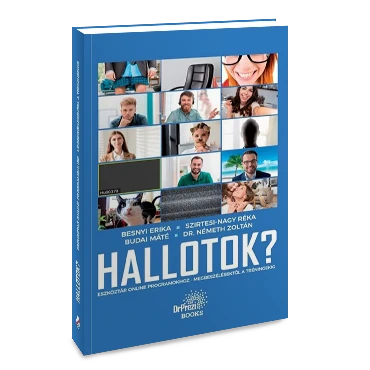

KÉT KÖNYV A SZAKMÁRÓL
Könyveim
A csoportból dolgozó tréneri jelenlétről, a prezentációról és a digitális képzésről.

SAJÁT KÖNYV · 2025 · 330 OLDAL
Intuitív tréning
Honnan tudom, hogy most érdemes elengednem az előre megírt tervet?
A csoport figyeléséről, a tréneri döntésekről és a rugalmas jelenlétről írok. Arról, hogyan épülhet tanulás abból is, ami váratlanul történik a teremben.
Beszélgetés a könyvről
TÁRSSZERZŐKÉNT · 2021
Hallotok?
Prezentáció és digitális képzés, a gyakorlat oldaláról.
Hogyan maradunk érthetőek és hogyan kapcsolódunk a résztvevőkhöz a képernyőn keresztül is? A közösen írt könyv ezt a szakmai világot járja körül.
A könyv a kiadónál